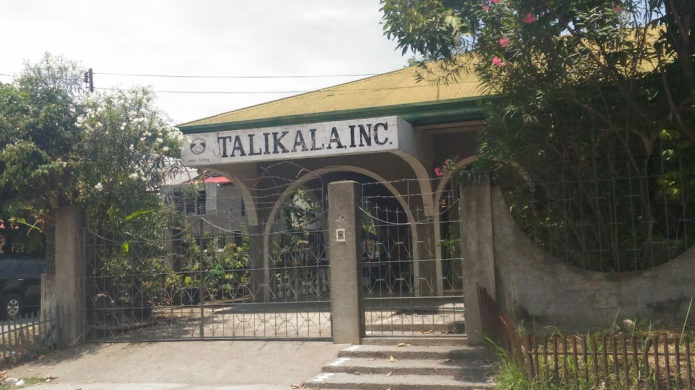

 Talikala incorporated is a non governmental institution, which means that they do not rely on the government for their funds, sources, materials, etc. for the goal that they want to achieve. Without the help of the government, for many years, they were able to help so many girls that are victims of sexual exploitation and prostitution. Because of this, Talikala was able to achieve this goal, but this doesn't mean that no problems come their way in their process of achieving more.
From the information that we have accessed, a problem that Talikala is currently facing is the lack of resources, specifically their financial resources. Despite their institution not facing problems with awareness in platforms like social media, they lack help from sponsors and the sponsors that they rely on aren't stable. This has caused difficulty within their organization, not having enough money to buy what they need to help them achieve their goals of helping girls heal from what they have gone through.
Our group, 3B from section Xavier, agreed to implement a planting project. The main objective of this project is to sell plants to gain funds that could be used to help talikala buy what they need.